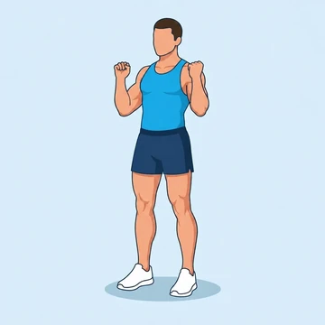
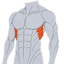

Bodyweight Overhead Press
A bodyweight press performed in a pike position facing a wall, replicating the overhead pressing pattern with the shoulders and triceps.
Shoulders · Bodyweight · Beginner


Muscles worked by the Bodyweight Overhead Press
Primary
Secondary

SerratusSerratus AnteriorAlso called: front deltoid, anterior delt, front delt, anterior deltoid, tricep, triceps.
Equipment
No equipment — this is a bodyweight exercise.
How to do the Bodyweight Overhead Press
- Stand facing a wall in a pike position with hands on the ground.
- Walk your feet closer for a more vertical body line.
- Lower your head toward the floor by bending your elbows.
- Press through your hands to extend your arms.
- Repeat for the desired number of reps.
Form tips
- Keep your hips high so the load stays over your shoulders.
- Avoid flaring your elbows straight out to the sides.
- Spread your fingers and grip the floor for stability.
At a glance
| Body part | Shoulders |
|---|---|
| Category | Strength |
| Force type | Push |
| Mechanic | Compound |
| Difficulty | Beginner |
| Equipment | Bodyweight |
| Goals | Hypertrophy, Strength |
| Tags | Knee safe, Lower back safe, No axial load |
| MET | 5.0 (metabolic equivalent, for calorie estimates) |
| Unilateral | No |
| Bodyweight | Yes |
| Dataset id | bodyweight-overhead-press |
Bodyweight Overhead Press in German & Spanish
| German | Bodyweight Overhead Press |
|---|---|
| Spanish | Press por Encima de la Cabeza con Peso Corporal |
Descriptions, instructions and tips ship in all three languages in the JSON.
Related exercises
Exercise data (JSON)
The record below is exactly what exercises.json ships for this exercise — names, descriptions, instructions and tips in English, German and Spanish.
{
"id": "bodyweight-overhead-press",
"name_en": "Bodyweight Overhead Press",
"name_de": "Bodyweight Overhead Press",
"name_es": "Press por Encima de la Cabeza con Peso Corporal",
"description_en": "A bodyweight press performed in a pike position facing a wall, replicating the overhead pressing pattern with the shoulders and triceps.",
"description_de": "Eine Drückübung in der Pike-Position, bei der das Körpergewicht den Widerstand für die Schultern liefert.",
"description_es": "Un press vertical de peso corporal en posición de pica que imita el patrón del press de hombros sin material.",
"category": "strength",
"force_type": "push",
"mechanic": "compound",
"difficulty": "beginner",
"body_part": "shoulders",
"primary_muscles": [
"anterior_deltoid",
"triceps_brachii"
],
"secondary_muscles": [
"serratus_anterior",
"trapezius"
],
"goals": [
"hypertrophy",
"strength"
],
"tags": [
"knee_safe",
"lower_back_safe",
"no_axial_load"
],
"variation_group": "overhead-press",
"is_unilateral": false,
"is_bodyweight": true,
"instructions_en": [
"Stand facing a wall in a pike position with hands on the ground.",
"Walk your feet closer for a more vertical body line.",
"Lower your head toward the floor by bending your elbows.",
"Press through your hands to extend your arms.",
"Repeat for the desired number of reps."
],
"instructions_de": [
"Stell dich in Pike-Position zur Wand mit den Händen auf dem Boden.",
"Laufe mit den Füßen näher heran, um den Körper vertikaler auszurichten.",
"Senke den Kopf Richtung Boden, indem du die Ellbogen beugst.",
"Drücke durch die Hände, um die Arme zu strecken.",
"Wiederhole die gewünschte Anzahl an Wiederholungen."
],
"instructions_es": [
"Colócate de pie frente a una pared en posición de pica con las manos en el suelo.",
"Acerca los pies a la pared para lograr una línea corporal más vertical.",
"Baja la cabeza hacia el suelo flexionando los codos.",
"Presiona con las manos para extender los brazos.",
"Repite el número deseado de repeticiones."
],
"tips_en": [
"Keep your hips high so the load stays over your shoulders.",
"Avoid flaring your elbows straight out to the sides.",
"Spread your fingers and grip the floor for stability."
],
"tips_de": [
"Halte die Hüfte hoch, damit die Last auf den Schultern bleibt.",
"Drücke den Boden aktiv weg und spreize die Finger für mehr Stabilität.",
"Geh mit den Füßen erst näher heran, wenn alle Wiederholungen sauber gelingen."
],
"tips_es": [
"Da pasos cortos con los pies para ajustar la dificultad.",
"Mantén el cuello neutro, con la mirada entre las manos.",
"Reparte el peso por toda la palma para aliviar las muñecas."
],
"met": 5.0,
"images": {
"flat": {
"start": "images/flat/bodyweight-overhead-press-start.webp",
"peak": "images/flat/bodyweight-overhead-press-peak.webp"
}
}
}Fetch just this exercise
const { exercises } = await fetch(
"https://exercise-dataset.com/exercises.json"
).then(r => r.json());
const ex = exercises.find(e => e.id === "bodyweight-overhead-press");Free for personal and commercial in-app use with attribution (“Exercise data by RepDB”) — see the license and ready-made attribution snippets. Redistributing the data as a dataset or API is not permitted.